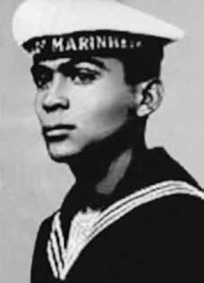

Edson
Neves
Quaresma
CIRCUNSTÂNCIAS DA MORTE
Edson Neves Quaresma desapareceu em 5 de dezembro de 1970. De acordo com a versão oficial dos fatos apresentada pelos órgãos de repressão do Estado na ocasião, no início de dezembro de 1970, Edson Neves estaria trafegando de carro no entorno da Praça Santa Rita de Cássia, em São Paulo, na companhia de um companheiro de militância da VPR, Yoshitane Fujimori, quando os dois teriam sido identificados por agentes do Destacamento de Operações de Informações – Centro de Operações de Defesa Interna de São Paulo (DOI-CODI/SP). A partir daí teria se seguido um confronto armado, que resultou na morte dos dois militantes. Passados mais de 40 anos do desaparecimento de Edson Neves, as investigações realizadas pela Comissão de Familiares sobre Mortos e Desaparecidos Políticos e, mais recentemente, pela Comissão Nacional da Verdade (CNV) revelaram a existência de inúmeros elementos de convicção que permitem apontar que a versão divulgada à época não se sustenta. Em depoimento à CEMDP, Ivan Akselrud de Seixas, que esteve preso no DOI-CODI na ocasião dos fatos, relatou o que ouviu dos policiais Dirceu Gravina e “Oberdan”, que estiveram no local da morte de Edson logo após o acontecido. Segundo os agentes do DOI-CODI, um motorista de táxi teria testemunhado os acontecimentos e lhes contado que os agentes policiais do DOPS/SP interceptaram o carro onde estavam Edson e Yoshitane e logo em seguida começaram a metralhar o veículo dos militantes. Embora os militantes tenham conseguido sair do carro, não tiveram tempo de reagir pois foram logo atingidos pelos disparos. Yoshitane Fujimori tombou morto no meio da Praça Santa Rita de Cássia, enquanto que Edson Quaresma conseguiu escapar por uma rua paralela. Entretanto, logo em seguida Edson foi capturado e conduzido de volta à Praça, onde foi agredido por policiais até a morte. Em seguida, os agentes teriam colocado os corpos no porta-malas da viatura e deixado o local em alta velocidade. Os acontecimentos que envolvem a morte de Edson Quaresma e Yoshitane suscitaram novas investigações quando os familiares dos dois militantes apresentaram processos junto à CEMDP. No voto apresentado pela relatora do processo, Suzana Keniger Lisbôa, há referência à possibilidade de que a eliminação sumária dos dois militantes esteja relacionada à necessidade de se manter em segredo a atuação de cabo Anselmo como agente infiltrado das forças de repressão junto às organizações de resistência, e que mantinha estreita relação com Edson. O laudo necroscópico de Edson Quaresma, produzido logo após a sua morte, atestou que ele morreu depois de ter sido atingido por cinco disparos de arma de fogo, um que atingiu a região dorso-lombar e outras quatro que atingiram diretamente a cabeça. A relatora do processo relativo ao caso de Edson Neves junto à CEMDP afirmou que essa configuração dos ferimentos poderia ser interpretada como um indício de que Edson não morreu em um confronto, mas de que foi executado pelos agentes do Estado. Em 4 de dezembro de 2013 foi realizada a 102ª Audiência Pública da Comissão da Verdade do Estado de São Paulo Rubens Paiva que, na ocasião, colheu depoimentos sobre o caso relacionado à morte de Edson Quaresma que, contudo, não resultaram em novas informações que permitissem esclarecer o caso. A certidão de óbito declara que Edson Neves Edson Neves foi enterrado como indigente no Cemitério de Vila Formosa, em São Paulo, não sendo seus restos mortais plenamente identificados. Diante da morte e ausência de identificação plena de seus restos mortais, a Comissão Nacional da Verdade, ao conferir tratamento jurídico mais adequado ao caso, entende que Edson Neves Quaresma permanece desaparecido.
Edson Neves Quaresma disappeared on December 5, 1970. According to the official version of the facts presented by the State repression bodies at the time, at the beginning of December 1970, Edson Neves was traveling by car around Praça Santa Rita de Cássia, in São Paulo, in the company of a fellow VPR activist, Yoshitane Fujimori, when the two were allegedly identified by agents from the Operations Operations Detachment. Information – São Paulo Internal Defense Operations Center (DOI-CODI/SP). An armed confrontation then ensued, which resulted in the death of the two militants. More than 40 years after the disappearance of Edson Neves, investigations carried out by the Commission of Relatives on Political Deaths and Disappearances and, more recently, by the National Truth Commission (CNV) revealed the existence of numerous elements of conviction that allow us to point out that the version published at the time is not sustainable. In a statement to CEMDP, Ivan Akselrud de Seixas, who was detained at DOI-CODI at the time of the events, reported what he heard from police officers Dirceu Gravina and “Oberdan”, who were at the scene of Edson's death shortly after the incident. According to DOI-CODI agents, a taxi driver witnessed the events and told them that DOPS/SP police agents intercepted the car containing Edson and Yoshitane and immediately began to machine-gun the militants' vehicle. Although the militants managed to get out of the car, they did not have time to react as they were immediately hit by gunfire. Yoshitane Fujimori fell dead in the middle of Praça Santa Rita de Cássia, while Edson Quaresma managed to escape through a parallel street. However, shortly afterwards Edson was captured and taken back to the Square, where he was beaten to death by police officers. The agents then placed the bodies in the trunk of the vehicle and left the scene at high speed. The events surrounding the deaths of Edson Quaresma and Yoshitane sparked new investigations when the families of the two militants filed lawsuits with the CEMDP. In the vote presented by the case's rapporteur, Suzana Keniger Lisbôa, there is reference to the possibility that the summary elimination of the two militants is related to the need to keep Corporal Anselmo's role as an infiltrated agent of the repression forces within resistance organizations, and who maintained a close relationship with Edson, a secret. Edson Quaresma's autopsy report, produced shortly after his death, confirmed that he died after being hit by five gunshots, one that hit the back and four others that hit directly the head. The rapporteur of the case relating to the case of Edson Neves with the CEMDP stated that this configuration of the injuries could be interpreted as an indication that Edson did not die in a confrontation, but that he was executed by State agents. On December 4, 2013, the 102nd Public Hearing of the Truth Commission of the State of São Paulo Rubens Paiva was held, which, at the time, collected statements about the case related to the death of Edson Quaresma, which, however, did not result in new information that would clarify the case. The death certificate states that Edson Neves Edson Neves was buried as a pauper in the Vila Formosa Cemetery, in São Paulo, with his remains not being fully identified. Given his death and the lack of full identification of his remains, the National Truth Commission, when granting more appropriate legal treatment to the case, understands that Edson Neves Quaresma remains missing.
Edson Neves Quaresma desapareció el 5 de diciembre de 1970. Según la versión oficial de los hechos presentada por los órganos de represión del Estado de la época, a principios de diciembre de 1970, Edson Neves se desplazaba en automóvil por la Plaza Santa Rita de Cássia, en São Paulo, en compañía de un compañero militante del VPR, Yoshitane Fujimori, cuando ambos habrían sido identificados por agentes del Destacamento de Operaciones de Operaciones. Información – Centro de Operaciones de Defensa Interna de São Paulo (DOI-CODI/SP). Se produjo entonces un enfrentamiento armado que se saldó con la muerte de los dos militantes. A más de 40 años de la desaparición de Edson Neves, investigaciones realizadas por la Comisión de Familiares sobre Muertes y Desapariciones Políticas y, más recientemente, por la Comisión Nacional de la Verdad (CNV) revelaron la existencia de numerosos elementos de convicción que permiten señalar que la versión publicada en su momento no es sostenible. En declaraciones al CEMDP, Ivan Akselrud de Seixas, detenido en el DOI-CODI en el momento de los hechos, relató lo que escuchó de los agentes de policía Dirceu Gravina y “Oberdan”, que se encontraban en el lugar de la muerte de Edson poco después del incidente. Según agentes del DOI-CODI, un taxista presenció los hechos y les dijo que agentes de la policía del DOPS/SP interceptaron el coche en el que viajaban Edson y Yoshitane e inmediatamente comenzaron a ametrallar el vehículo de los militantes. Aunque los militantes lograron salir del vehículo, no tuvieron tiempo de reaccionar ya que inmediatamente fueron alcanzados por disparos. Yoshitane Fujimori cayó muerto en plena plaza Santa Rita de Cássia, mientras que Edson Quaresma logró escapar por una calle paralela. Sin embargo, poco después Edson fue capturado y llevado de regreso a la plaza, donde agentes de policía lo mataron a golpes. Acto seguido, los agentes colocaron los cadáveres en el maletero del vehículo y abandonaron el lugar a gran velocidad. Los acontecimientos que rodearon las muertes de Edson Quaresma y Yoshitane provocaron nuevas investigaciones cuando las familias de los dos militantes presentaron demandas ante el CEMDP. En la votación presentada por la relatora del caso, Suzana Keniger Lisbôa, se hace referencia a la posibilidad de que la eliminación sumaria de los dos militantes esté relacionada con la necesidad de mantener en secreto el papel del cabo Anselmo como agente infiltrado de las fuerzas de represión en el seno de las organizaciones de resistencia, y que mantenía una estrecha relación con Edson. El informe de la autopsia de Edson Quaresma, realizado poco después de su muerte, confirmó que murió tras recibir cinco disparos, uno en la espalda y otros cuatro que impactaron directamente en la cabeza. El relator del caso relativo al caso de Edson Neves ante el CEMDP afirmó que esta configuración de las lesiones podría interpretarse como un indicio de que Edson no murió en un enfrentamiento, sino que fue ejecutado por agentes del Estado. El 4 de diciembre de 2013 se llevó a cabo la 102ª Audiencia Pública de la Comisión de la Verdad del Estado de São Paulo Rubens Paiva, que, en su momento, recogió declaraciones sobre el caso relacionado con la muerte de Edson Quaresma, que, sin embargo, no resultó en nuevas informaciones que esclarezcan el caso. El certificado de defunción indica que Edson Neves Edson Neves fue enterrado como indigente en el cementerio de Vila Formosa, en São Paulo, sin que sus restos estén plenamente identificados. Ante su muerte y la falta de identificación plena de sus restos, la Comisión Nacional de la Verdad, al otorgar un tratamiento jurídico más adecuado al caso, entiende que Edson Neves Quaresma continúa desaparecido.